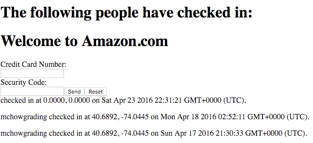
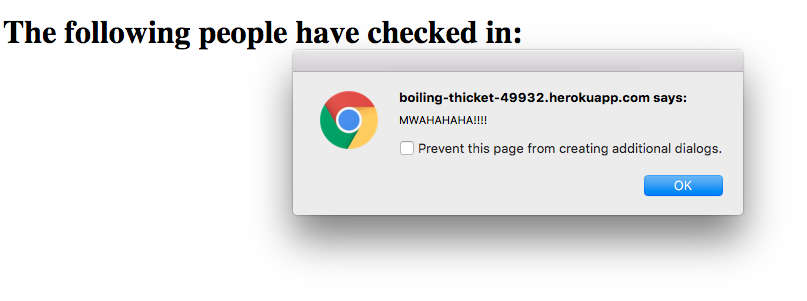

Security Analysis of Duc Nguyen's Location Data Server
Prepared by Zach Zager
Web Programming (COMP 20)
Tufts University
Instructor: Ming Chow
Introduction
This is an assessment of the security of Duc Nguyen's web server developed for Assignment 3. You can find his server here. This assignment entails:
Developing a server-side web application using Heroku, Node.js, and the Express web framework
Enabling and using Cross-Origin Resource Sharing (CORS)
Reading and writing data to a MongoDB database
Building JSON-based APIs
These technologies and techniques are extremely useful, but present many potential problems for security. This application lacks the necessary security for public deployment.
Methodology
I started testing using a "black-box" approach. I used a JavaScript file I wrote to test my own server to send data to Duc's. I sent a variety of scripts, embedded content, and HTML content to Duc's server. After evaluating these results, I searched through Duc's code to identify specific vulnerabilities.
Abstract of findings
The main point of insecurity for this server is it's acceptance of nearly all user input. This is a common pitfall for web applications because hackers constantly find clever ways to bypass security efforts. While this program does a good job screening location data, it does little to prevent deviant user login information. The server does a good job of preventing scripts from being run on it, but it does little to prevent these from being sent to users. By storing scripts, video embed links, and HTML content on the server as login data, hackers can exploit this program to propagate malicious content. The server's security also suffers from it's unlimited availability. Anyone with the heroku app link can access the POST and GET commands of the server API.
Issues found and technical analysis
Content Injection and Cross-Site Scripting
The sendLocation POST API does not restrict login input to valid logins strings. This creates the opportunity for two similar types of attacks: cross-site scripting and injection. Users can send scripts (cross-site scripting) or content (injection) to the server, which stores them in the database.
Severity: Medium. This vulnerability can cause inconvenience and even fraud for users. It allows hackers to store non-login information in the login document of the database. It is also an easy flaw to exploit. I only consider it a medium issue because there is no risk of scripts being run on the server.
The main problem with this vulnerability is that it enables hackers to store content that does not function like a simple string when served to the user. This data can be innocuous, like this injected Game of Thrones trailer:
However, the data can also be malicious. Below is an example of a mock Amazon submission form. Hackers could serve a similar form that acquires private information from clients using the server. This would represent a significant failure by the program to protect it's users.

In addition to static content, hackers can send scripts (cross-site scripting) over the server that affects the user's experience or completely ruins it. Below is an example of an infinitely looping notification window:

Hackers could send far more malicious scripts to acquire sensitive information about the user (location, IP Address, etc.). A study by White Hat Security found that 47.9% of websites are vulnerable to XSS attacks (source).
Resolution: There are several simple methods for addressing this issue. The server could contain a list of acceptable logins. This way, any login parameter sent to the server that's not accepted will not be stored. The server could also parse the login string for words like "embed", "script", or even any non-alphanumeric characters. If any of these terms are found the POST request can be rejected.
No password or account required
This issue is found in all fields of the server API.
Severity: Low. This does not enable users to damage the database or send particularly malicious content. It does, however, reduce the amount of control the server administrator has over who can access the server. It also restricts the admin's ability to identify specific users who are using the server improperly. If one particular user is taking advantage of the server to store long strings of data in the logins field of the database, the admin has no way of tracking them.
Any user can access any of the API fields. The server has no way of controlling who has access other than by checking for valid input. This issue is evident by looking through the server code. Each API interface only utilizes the login string and location data. The only verification is to confirm that the location points are valid GPS coordinates and that the login is a valid string. This is shown below:
if(login == undefined || isNaN(lat) || isNaN(lng)){
response.send({"error":"Whoops, something is wrong with your data!"});
}
This issue can be resolved in several ways. A practical method would be to assign each unique user a specific login (and potentially have them set a password for added security). If any user tries to access the server without a specific login, they will be denied. This can by done by looping through an array of valid logins. jQuery makes this very easy with the "inArray" function ($.inArray(value, array)), which returns -1 if the value is not found. Using this simple trick could greatly reduce the server's security issues. It might looks something like:
if($.inArray(request.body.login, loginList) || isNaN(lat) || isNaN(lng)){
response.send({"error":"Whoops, something is wrong with your data!"});
}
Cross-Origin Resource-Sharing
This issue is found in the sendLocation POST, checkins.json GET, and the index ('/') GET server APIs.
Severity: Medium. While cross-origin resource-sharing is frequently enabled, it still presents an opportunity for crafty hackers to infiltrate the server and database. Any site can send an XMLHttpRequest request to the site and access the server’s response. This would not be the case if cross-origin resource-sharing had not been enabled.
I found this issue when looking through Duc's server code and finding that CORS had been enabled.
This problem can be solved by adding extra layers of security to enabling CORS. The server can require that the user send an OPTIONS request to ask the server if the full request is permissable. One useful SERVER header response is Access-Control-Allow-Headers. This is a list of allowable custom request headers such as AUTHORIZATION, X-CLIENT-ID, and X-CLIENT_SECRET (source). Requiring specific header values will enhance security and limit the number of users with direct access to the server.
Conclusion
The various security vulnerabilities of Duc's server make it easy to deface. The ease with which hackers can send malicious or even just improper data should not be possible in a publicly available product. Unfortunately, security issues are all too common. According to WhiteHat Security's 2015 Website Security Statistics Report, 86% of all websites have at least one serious vulnerability. "The likelihood that these vulnerabilities pertain to insufficient transport layer protection is 70% and the likelihood of information leakage is 56% (source)." These problems are very similar to those faced by Duc's server. Ultimately, the best way to avoid security issues is to remain cautious of user input. Never fully trust any information the user sends to the server. Remaining cautious of this input greatly reduces the risk of damaging cyberattacks.